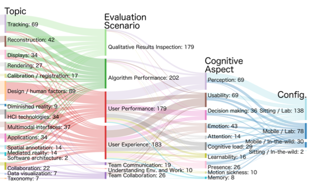

Evaluating Mixed and Augmented Reality: A Systematic Literature Review (2009-2019)

Venue. ISMAR (2020)
Authors. Leonel Merino, Magdalena Schwarzl, Matthias Kraus, Michael Sedlmair, Dieter Schmalstieg, Daniel Weiskopf
Abstract. We present a systematic review of 45S papers that report on evaluations in mixed and augmented reality (MR/AR) published in ISMAR, CHI, IEEE VR, and UIST over a span of 11 years (2009-2019). Our goal is to provide guidance for future evaluations of MR/AR approaches. To this end, we characterize publications by paper type (e.g., technique, design study), research topic (e.g., tracking, rendering), evaluation scenario (e.g., algorithm performance, user performance), cognitive aspects (e.g., perception, emotion), and the context in which evaluations were conducted (e.g., lab vs. in-thewild). We found a strong coupling of types, topics, and scenarios. We observe two groups: (a) technology-centric performance evaluations of algorithms that focus on improving tracking, displays, reconstruction, rendering, and calibration, and (b) human-centric studies that analyze implications of applications and design, human factors on perception, usability, decision making, emotion, and attention. Amongst the 458 papers, we identified 248 user studies that involved 5,761 participants in total, of whom only 1,619 were identified as female. We identified 43 data collection methods used to analyze 10 cognitive aspects. We found nine objective methods, and eight methods that support qualitative analysis. A majority (216/248) of user studies are conducted in a laboratory setting. Often (138/248), such studies involve participants in a static way. However, we also found a fair number (30/248) of in-the-wild studies that involve participants in a mobile fashion. We consider this paper to be relevant to academia and industry alike in presenting the state-of-the-art and guiding the steps to designing, conducting, and analyzing results of evaluations in MR/AR.